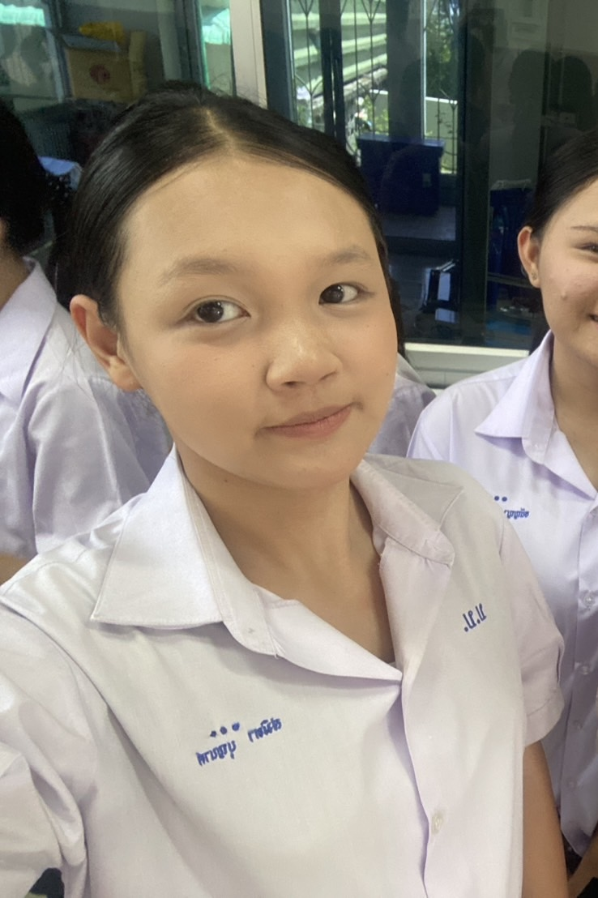
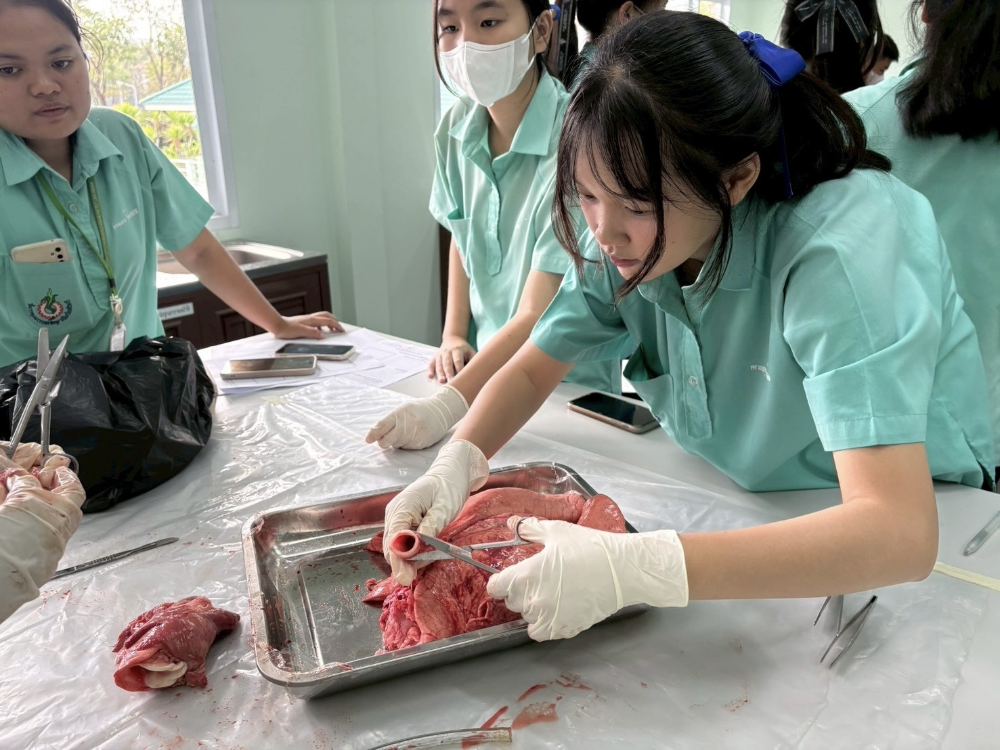

ชื่อ : สมิตา บุญนาค (Samita Boonnark)
ระดับการศึกษา : มัธยมศึกษาปีที่ 6
แผนการเรียน : เตรียมวิศวกรรมศาสตร์ (Pre-Engineering) ⚙️
ความสนใจ : วิทยาศาสตร์ เทคโนโลยี วิศวกรรมศาสตร์ และนวัตกรรมทางการแพทย์
งานอดิเรก : เรียนรู้สิ่งใหม่ ๆ ทำโครงงาน และศึกษาด้านเทคโนโลยี
• การเป็นผู้นำ
สามารถรับผิดชอบงาน
และช่วยวางแผนการทำงานร่วมกับผู้อื่น
• การนำเสนอ
สามารถสื่อสารและนำเสนอข้อมูล
ให้ผู้อื่นเข้าใจได้อย่างชัดเจน
• การทำงานเป็นทีม
สามารถทำงานร่วมกับผู้อื่น
รับฟังความคิดเห็น
และช่วยกันแก้ไขปัญหา
• การเรียนรู้สิ่งใหม่
มีความสนใจในการเรียนรู้
และพัฒนาความสามารถของตนเองอยู่เสมอ

“ทำในสิ่งที่ตัวเองตั้งใจให้ดีที่สุด“